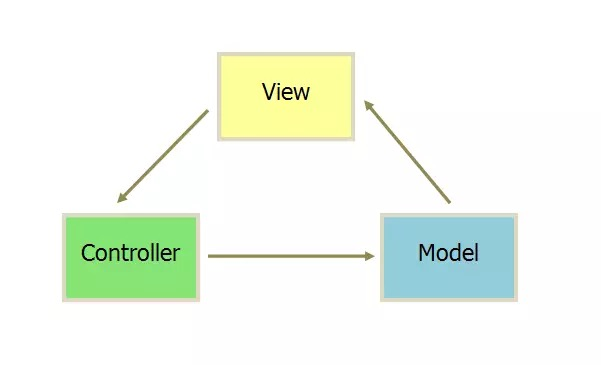
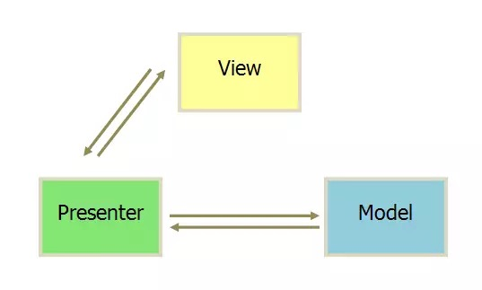
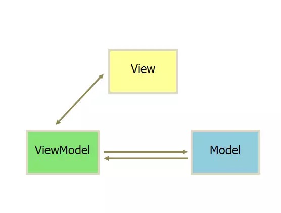

Android MVVM到底是啥？看完就明白了
来源:微信公众号
今天投稿的胡笛同学是我共事多年的同事，他是我见过最优秀的程序员之一，他运营的技术公众号极客联盟干货很多，值得大家关注。今天他将为我们介绍Android MVVM框架Data Binding Library的使用。
什么是MVVM
我们一步步来，从MVC开始。
MVC 我们都知道，模型——视图——控制器。为了使得程序的各个部分分离降低耦合性，我们对代码的结构进行了划分。

他们的通信方式也如上图所示，即View层触发操作通知到业务层完成逻辑处理，业务层完成业务逻辑之后通知Model层更新数据，数据更新完之后通知View层展现。在实际运用中人们发现View和Model之间的依赖还是太强，希望他们可以绝对独立的存在，慢慢的就演化出了MVP。

Presenter 替换掉了Controller，不仅仅处理逻辑部分。而且还控制着View的刷新，监听Model层的数据变化。这样隔离掉View和Model的关系后使得View层变的非常的薄，没有任何的逻辑部分又不用主动监听数据，被称之为“被动视图”。

至于MVVM基本上和MVP一模一样，感觉只是名字替换了一下。他的关键技术就是今天的主题(Data Binding)。View的变化可以自动的反应在ViewModel，ViewModel的数据变化也会自动反应到View上。这样开发者就不用处理接收事件和View更新的工作，框架已经帮你做好了。
Data Binding Library
今年的Google IO 大会上，Android 团队发布了一个数据绑定框架（Data Binding Library）。以后可以直接在 layout 布局 xml 文件中绑定数据了，无需再 findViewById 然后手工设置数据了。其语法和使用方式和 JSP 中的 EL 表达式非常类似。
下面就来介绍怎么使用Data Binding Library。
配置环境
目前，最新版的Android Studio已经内置了该框架的支持，配置起来也很简单，只需要编辑app目录下的build.gradle文件，添加下面的内容就好了
android {
....
dataBinding {
enabled = true
}
}
Data Binding Layout文件
Data Binding layout文件有点不同的是：起始根标签是 layout，接下来一个 data 元素以及一个 view 的根元素。这个 view 元素就是你没有使用Data Binding的layout文件的根元素。举例说明如下：
<?xml version="1.0" encoding="utf-8"?><layout xmlns:android="http://schemas.android.com/apk/res/android">
<data>
<variable name="user" type="com.example.User"/>
</data>
<LinearLayout
android:orientation="vertical"
android:layout_width="match_parent"
android:layout_height="match_parent">
<TextView android:layout_width="wrap_content"
android:layout_height="wrap_content"
android:text="@{user.firstName}"/>
<TextView android:layout_width="wrap_content"
android:layout_height="wrap_content"
android:text="@{user.lastName}"/>
</LinearLayout></layout>
上面定义了一个com.example.User类型的变量user，然后接着android:text="@{user.firstName}"把变量user的firstName属性的值和TextView的text属性绑定起来。
Data Object
我们来看下上面用到的com.example.User对象。
public class User {
public final String firstName;
public final String lastName;
public User(String firstName, String lastName) {
this.firstName = firstName;
this.lastName = lastName;
}
}
他有两个public的属性firstName，lastName，这和上面layout文件里面的@{user.firstName}和@{user.lastName}对应,或者下面这种形式的对象也是支持的。
public class User {
private final String firstName;
private final String lastName;
public User(String firstName, String lastName) {
this.firstName = firstName;
this.lastName = lastName;
}
// getXXX形式
public String getFirstName() {
return this.firstName;
}
// 或者属性名和方法名相同
public String lastName() {
return this.lastName;
}
}
绑定数据
添加完<data>标签后，Android Studio就会根据xml的文件名自动生成一个继承ViewDataBinding的类。例如: activity_main.xml就会生成ActivityMainBinding, 然后我们在Activity里面添加如下代码：
@Override
protected void onCreate(Bundle savedInstanceState) {
super.onCreate(savedInstanceState);
MainActivityBinding binding = DataBindingUtil.setContentView(this, R.layout.main_activity);
User user = new User("Test", "User");
binding.setUser(user);
}
绑定事件
就像你可以在xml文件里面使用属性android:onClick绑定Activity里面的一个方法一样，Data Binding Library扩展了更多的事件可以用来绑定方法，比如View.OnLongClickListener有个方法onLongClick(), 你就可以使用android:onLongClick属性来绑定一个方法，需要注意的是绑定的方法的签名必须和该属性原本对应的方法的签名完全一样，否则编译阶段会报错。
下面举例来说明具体怎么使用，先看用来绑定事件的类：
public class MyHandlers {
public void onClickButton(View view) { ... }
public void afterFirstNameChanged(Editable s) { ... }
}
然后就是layout文件：
<?xml version="1.0" encoding="utf-8"?><layout xmlns:android="http://schemas.android.com/apk/res/android">
<data>
<variable name="handlers" type="com.example.Handlers"/>
<variable name="user" type="com.example.User"/>
</data>
<LinearLayout
android:orientation="vertical"
android:layout_width="match_parent"
android:layout_height="match_parent">
<EditText android:layout_width="wrap_content"
android:layout_height="wrap_content"
android:text="@{user.firstName}"
android:afterTextChanged="@{handlers.afterFirstNameChanged}"/>
<Button android:layout_width="wrap_content"
android:layout_height="wrap_content"
android:onClick="@{handlers.onClickButton}"/>
</LinearLayout>
</layout>
表达式语言（Expression Language）
你可以直接在layout文件里面使用常见的表达式：
- 数学表达式 + – / * %
- 字符串链接 +
- 逻辑操作符 && ||
- 二元操作符 & | ^
- 一元操作符 + – ! ~
- Shift >> >>> <<
- 比较 == > < >= <=
- instanceof
- Grouping ()
- Literals – character, String, numeric, null
- Cast
- 函数调用
- 值域引用（Field access）
- 通过[]访问数组里面的对象
- 三元操作符 ?:
示例：
android:text="@{String.valueOf(index + 1)}"
android:visibility="@{age < 13 ? View.GONE : View.VISIBLE}"
android:transitionName='@{"image_" + id}'
更多语法可以参考官网文档：http://developer.android.com/tools/data-binding/guide.html#expression_language
更新界面
有些时候，代码会修改我们绑定的对象的某些属性，那么怎么通知界面刷新呢？下面就给出两种方案。
方案一
让你的绑定数据类继承BaseObservable，然后通过调用notifyPropertyChanged方法来通知界面属性改变，如下：
private static class User extends BaseObservable {
private String firstName;
private String lastName;
@Bindable
public String getFirstName() {
return this.firstName;
}
@Bindable
public String getLastName() {
return this.lastName;
}
public void setFirstName(String firstName){
this.firstName = firstName;
notifyPropertyChanged(BR.firstName);
}
public void setLastName(String lastName) {
this.lastName = lastName;
notifyPropertyChanged(BR.lastName);
}
}
在需要通知的属性的get方法上加上@Bindable，这样编译阶段会生成BR.[property name]，然后使用这个调用方法notifyPropertyChanged就可以通知界面刷新了。如果你的数据绑定类不能继承BaseObservable，那你就只能自己实现Observable接口，可以参考BaseObservable的实现。
方案二
Data Binding Library提供了很便利的类ObservableField，还有ObservableBoolean, ObservableByte, ObservableChar, ObservableShort, ObservableInt, ObservableLong, ObservableFloat, ObservableDouble, 和 ObservableParcelable，基本上涵盖了各种我们需要的类型。用法很简单，如下：
private static class User {
public final ObservableField<String> firstName = new ObservableField<>();
public final ObservableField<String> lastName = new ObservableField<>();
public final ObservableInt age = new ObservableInt();
}
然后使用下面的代码来访问：
user.firstName.set("Google");
int age = user.age.get();
调用set方法时，Data Binding Library就会自动的帮我们通知界面刷新了。
绑定AdapterView
在一个实际的项目中，相信AdapterView是使用得很多的，使用官方提供给的API来进行AdapterView的绑定需要写很多代码，使用起来不方便，但是由于Data Binding Library提供丰富的扩展功能，所以出现了很多第三方的库来扩展它，下面就来介绍一个比较好用的库binding-collection-adapter,使用的时候在你的build.gradle文件里面添加compile 'me.tatarka:bindingcollectionadapter:0.16',如果你要是用RecyclerView，还需要添加compile 'me.tatarka:bindingcollectionadapter-recyclerview:0.16'
下面就是ViewModel的写法：
public class ViewModel {
public final ObservableList<String> items = new ObservableArrayList<>();
public final ItemView itemView = ItemView.of(BR.item, R.layout.item);
}
这里用到了ObservableList, 他会在items变化的时候自动刷新界面,然后下面是layout.xml文件：
<layout xmlns:android="http://schemas.android.com/apk/res/android"
xmlns:app="http://schemas.android.com/apk/res-auto">
<data>
<variable name="viewModel" type="com.example.ViewModel"/>
<import type="me.tatarka.bindingcollectionadapter.LayoutManagers" />
</data>
<ListView
android:layout_width="match_parent"
android:layout_height="match_parent"
app:items="@{viewModel.items}"
app:itemView="@{viewModel.itemView}"/>
<android.support.v7.widget.RecyclerView
android:layout_width="match_parent"
android:layout_height="match_parent"
app:layoutManager="@{LayoutManagers.linear()}"
app:items="@{viewModel.items}"
app:itemView="@{viewModel.itemView}"/>
<android.support.v4.view.ViewPager
android:layout_width="match_parent"
android:layout_height="match_parent"
app:items="@{viewModel.items}"
app:itemView="@{viewModel.itemView}"/>
<Spinner
android:layout_width="match_parent"
android:layout_height="match_parent"
app:items="@{viewModel.items}"
app:itemView="@{viewModel.itemView}"
app:dropDownItemView="@{viewModel.dropDownItemView}"/>
</layout>
然后是item.xml：
<layout xmlns:android="http://schemas.android.com/apk/res/android"
xmlns:app="http://schemas.android.com/apk/res-auto">
<data>
<variable name="item" type="String"/>
</data>
<TextView
android:id="@+id/text"
android:layout_width="match_parent"
android:layout_height="wrap_content"
android:text="@{item}"/>
</layout>
如果有多种样式的布局，那么就需要把ItemView换成ItemViewSelector， 如下：
public final ItemViewSelector<String> itemView = new BaseItemViewSelector<String>() {
@Override
public void select(ItemView itemView, int position, String item) {
itemView.set(BR.item, position == 0 ? R.layout.item_header : R.layout.item);
}
// This is only needed if you are using a BindingListViewAdapter
@Override
public int viewTypeCount() {
return 2;
}
};
自定义绑定
正常情况下，Data Binding Library会根据属性名去找对应的set方法，但是我们有时候需要自定义一些属性，Data Binding Library也提供了很便利的方法让我们来实现。
比如我们想在layout文件里面设置ListView的emptyView，以前这个是无法做到的，只能在代码里面通过调用setEmptyView来做；
但是现在借助Data Binding Library，我们可以很容易的实现这个功能了。先看layout文件：
<?xml version="1.0" encoding="utf-8"?>
<layout xmlns:android="http://schemas.android.com/apk/res/android"
xmlns:app="http://schemas.android.com/apk/res-auto">
<data>
<variable
name="viewModel"
type="com.example.databinding.viewmodel.ViewAlbumsViewModel"/>
</data>
<LinearLayout
android:layout_width="match_parent"
android:layout_height="match_parent"
android:paddingLeft="10dp"
android:paddingRight="10dp"
android:orientation="vertical">
<ListView
android:layout_width="fill_parent"
android:layout_height="0px"
android:layout_weight="1.0"
app:items="@{viewModel.albums}"
app:itemView="@{viewModel.itemView}"
app:emptyView="@{@id/empty_view}"
android:onItemClick="@{viewModel.viewAlbum}"
android:id="@+id/albumListView"/>
<TextView
android:id="@+id/empty_view"
android:layout_width="fill_parent"
android:layout_height="0px"
android:layout_weight="1.0"
android:gravity="center"
android:text="@string/albums_list_empty" />
<Button
android:layout_width="fill_parent"
android:layout_height="wrap_content"
android:text="@string/create"
android:onClick="@{viewModel.createAlbum}"/>
</LinearLayout>
</layout>
app:emptyView="@{@id/empty_view}"这个代码就用来指定emptyView，下面来看下实现的代码：
@BindingAdapter("emptyView")
public static <T> void setEmptyView(AdapterView adapterView, int viewId) {
View rootView = adapterView.getRootView();
View emptyView = rootView.findViewById(viewId);
if (emptyView != null) {
adapterView.setEmptyView(emptyView);
}
}
下面我们来分析上面的代码，@{@id/empty_view}表示引用了@id/empty_view这个id，所以它的值就是int，再看上面的setEmptyView方法，第一个参数AdapterView adapterView表示使用emptyView这个属性的控件，而第二个参数int viewId则是emptyView属性传进来的值，上面的layout可以看出来它就是R.id.empty_view，然后通过id找到控件，然后调用原始的setEmptyView来设置。
上面的代码来自我写的一个Data Binding Library的示例项目DataBinding-album-sample
它基本上包含了开发一个app常用到的东西，大家有兴趣可以通过阅读原文去看看。
扫描或长按下方二维码可以关注胡笛同学的微信技术公众号
“崇尚自由，推崇技术，拥抱开源” - 极客联盟：传播新技术理念，分享技术经验。 打造华中区最有影响力的技术公众号。